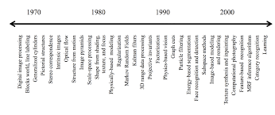
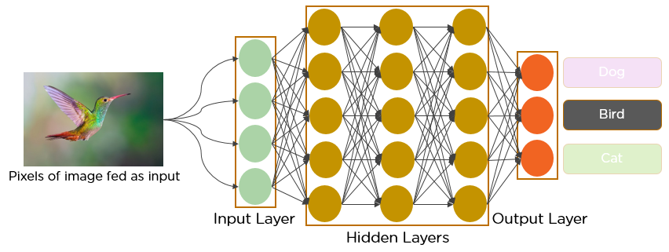

|
 |
Computer vision needs lots of data. It runs analyses of data over and over until it discerns distinctions and ultimately recognize images. For example, to train a computer to recognize automobile tires, it needs to be fed vast quantities of tire images and tire-related items to learn the differences and recognize a tire, especially one with no defects.
Two essential technologies are used to accomplish this: a type of machine learning called deep learning and a convolutional neural network (CNN).
|  |
Machine learning uses algorithmic models that enable a computer to teach itself about the context of visual data. If enough data is fed through the model, the computer will “look” at the data and teach itself to tell one image from another. Algorithms enable the machine to learn by itself, rather than someone programming it to recognize an image.
A CNN helps a machine learning or deep learning model “look” by breaking images down into pixels that are given tags or labels. It uses the labels to perform convolutions (a mathematical operation on two functions to produce a third function) and makes predictions about what it is “seeing.” The neural network runs convolutions and checks the accuracy of its predictions in a series of iterations until the predictions start to come true. It is then recognizing or seeing images in a way similar to humans.
Much like a human making out an image at a distance, a CNN first discerns hard edges and simple shapes, then fills in information as it runs iterations of its predictions. A CNN is used to understand single images. A recurrent neural network (RNN) is used in a similar way for video applications to help computers understand how pictures in a series of frames are related to one another.